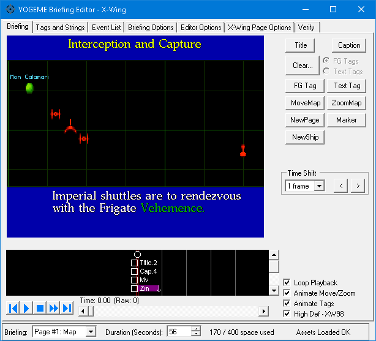
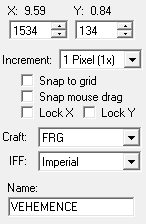
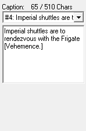
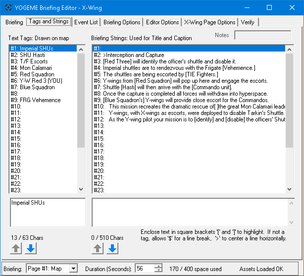
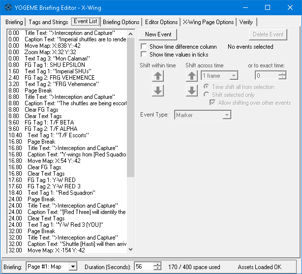
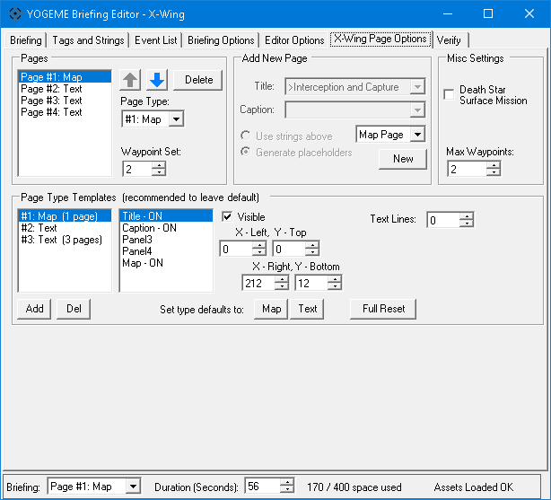
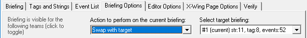

NOTE: The full manual for the briefing dialog is located here. It is far more comprehensive than anything listed in this document. It covers navigation, hotkeys, and explains all the controls and event nuances in more detail.
Opening the Briefing Dialog will bring you to the main Briefing Map tab.

This is the pre-mission briefing just before you fly. This will be a very brief overview of the editor and its main features, plus some features that are specific to X-Wing, and some of its limitations compared to other games in the series.
The map screen is front and center, hard to miss. To the right of the map is the sidebar. Below the map is the timeline.
The sidebar changes dynamically depending on what is selected.
When nothing is selected, there are buttons to create events, time shift buttons that can add or remove time between events, and some quick toggle options that affect how the map is displayed.
When something is selected, there will be controls for manipulating the selected item.
At the very bottom, in the footer area, you can select the page to view. X-Wing briefings always have a map page, plus one or more text pages.
The duration is how long the briefing will play before looping.
All events consume event space, and there's a limited amount. You normally won't have to worry about reaching the limit. Most briefings aren't even close.
Finally some status text.
On an empty briefing, the status text should say "Assets Loaded OK". If it doesn't, you need to assign the installation paths in YOGEME's Options menu. See setup in the full briefing manual.
The status text may also report verification issues, to detect common problems in a briefing. As you make changes, it will describe how many of those changes can be undone.
This is what you will see in-game. It is nearly pixel accurate to the original games. It displays craft icons (flightgroups), is capable of highlighting flightgroups, displaying lines of text, as well as moving and zooming the map.
The 1998 Windows Special Edition animates at approximately 9 fps, though the earlier 1994 DOS CD version is slightly faster at 10 fps. You can choose to emulate the visual appearance and playback speed of either version by toggling the High Def - XW98 checkbox in the bottom right corner.
The internal canvas in X-Wing 1998 is reasonably large, and the DOS version here is scaled up to match. In the Editor Options tab, under Map Scaling, recommended to use Fixed Size and either 1.0, or higher like 2.0 or 3.0 if your desktop resolution is high enough. Fixed Size with whole numbers is very nice for crystal clear, perfect pixel scaling.
You can select things by clicking on them in the map or timeline. The blue areas with text are called panels. The top is the title panel, and the bottom is the caption panel. If any text is displayed within a panel, you can select the corresponding string event by left clicking the panel.
These are all the possible events to influence the briefing:
When creating events, simple events like New Page will insert instantly when clicking the button. Title requires you to choose a string slot, and write a string in the provided edit box. Text Tag requires you to choose a position on the map, and a string. Move Map and Zoom Map will produce scrollbars beside and beneath the map to facilitate scrolling, although you can use the mouse or numeric controls too. All of these parameters, and the controls to modify them, are dynamically displayed in the sidebar depending on the kind of event you're creating. When you're ready to insert the event, click OK. To back out, just click Cancel.
To modify existing events, select them and their information will appear in the sidebar. All events can be freely modified after they've been created.
To delete events, select them and press the [Delete] key.
Some examples of the dynamic sidebar controls, and their editable properties.
FG Icon selected |
Caption selected |
 |
 |
New Ship appears in the sidebar below the event buttons, but it's not actually an event. It allows you to create additional briefing flightgroups from directly within the map, as opposed to using the main YOGEME window in BRF mode. This is much easier! Choose the craft type and IFF, which determines the color of the icon. Only basic craft types can receive IFF colors. Choose the location by dragging on the map. Give the flightgroup a name too. Fun fact: the name is visible in game if you pause the briefing and mouse-over the icon.
Other games in the series allow 8 tags, and don't require them to be cleared before reassigning. X-Wing is very strict with these rules.
Time shift inserts or removes space at the current time. Existing events that are on, or after, the current time will be pushed out or pulled in.

A full overview of all tag and strings slots. There are a maximum of 32 tag strings and 32 caption strings.
To modify a string, click on its list item, then use the edit boxes directly underneath. The arrow buttons can move their respective strings up or down, useful to keep your captions in order. Tip: to insert an empty slot, it's easier to move an empty string from the bottom up, rather than moving everything down.
Tags are displayed on the map. Captions are displayed in the text panels. Tags do not allow special formatting, but captions do. Use "[ ]" brackets for green highlighting. The title, which is usually the topmost caption, is usually prefixed with ">" which causes text to be centered with yellow text. For line breaks, useful in captions on the text pages, use "$".
Watch the string lengths and make sure you don't exceed the maximum. It can crash the game.
Note: If you replace any strings in an existing mission, or replace the mission entirely, the original briefing voices will play. The audio is triggered when a Caption event activates a particular string number. The string and its contents don't matter. The audio cannot be controlled by the briefing.

This is a complete listing of all briefing events, with slightly more detailed information.
If you select events here, the sidebar will appear with all editable properties, just as it does on the map.
Events can be created here, but it's more tedious. Clicking New Event defaults to Page Break and the event type must be manually changed with the dropdown. It's much easier to use the map instead, when possible.
The list allows multiple selection by dragging the mouse from one event to another. Or by holding [Shift] and clicking a range of items. Or by holding [Control] and clicking individual events to toggle.
Events can be shifted up and down, which is equivalent to the Time Shift on the map, or dragging events around in the timeline. One benefit of using this tab for shifting is having more options, like shifting to an exact time.

There is a lot here, but you can ignore most of it. This is where you can add or remove text pages.
The list of pages is in the top left. It's the same list as in the briefing page selector in the footer section of the window.
Use the "Add New Page" section to create a new page. Use the dropdown list to select either Text Page or Hint Page. Hint pages are just text pages with some extra formatting informing the player to click through to see the hint spoilers.
If you've already written the title and caption strings, you can choose them from the string dropdowns. Otherwise just leave Generate placeholders selected. You can to change them later. Then click the New button to create the page.
To delete a page, click an item in the page list in the top left. Then click the Delete button.
Pages can be moved up and down with the arrow keys.
The only other thing that may be of interest here is the Death Star Surface Mission in the top right Misc Settings. This will change the background color of the briefing.
You don't need to use anything else here! Don't worry about Page Type Templates. That's super advanced stuff, for changing the layout of pages. It's not standardized, and will behave differently in every game. I personally recommend that nobody use it. If you insist on changing it, Panel Mode is available. Consult the full manual for more information.

There are some special considerations if you happen to use any of the briefing management options here.
Although you can use Swap With Target, this only works to swap event commands on the page. The underlying page type won't be swapped. Recommended to use the X-Wing Page Options tab instead.
In X-Wing, all pages share the same string pool. If you erase a page, it only erases the events. It will offer a confirmation prompt if you wish to delete strings too, but only if you erase the first page.